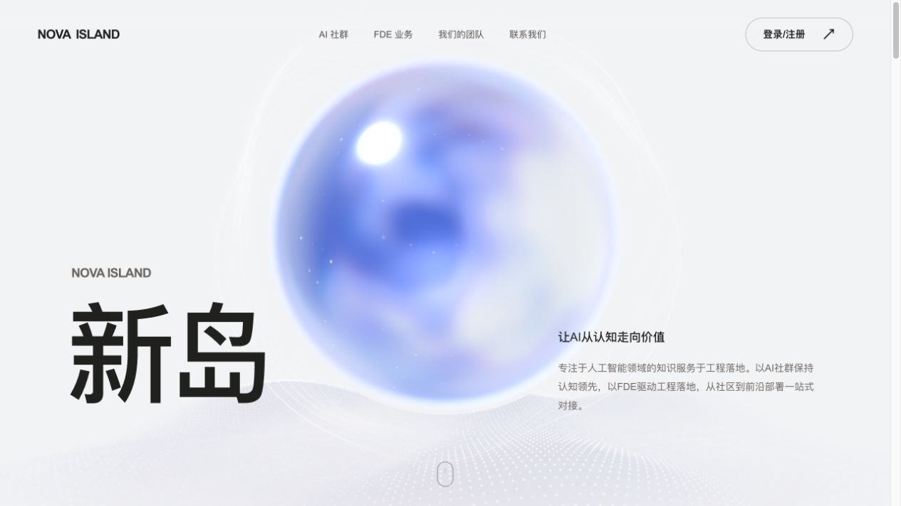

为什么是球体
球体没有明确的工具或行业指向，能承载 AI 的开放可能。圆润轮廓降低技术的距离感，让人愿意靠近、探索。
依据 novaisland.cn 当前页面与最终生效样式整理。采集日期：2026-09-14。
安静的未来感：轻盈、通透、克制、开放。

球体没有明确的工具或行业指向，能承载 AI 的开放可能。圆润轮廓降低技术的距离感，让人愿意靠近、探索。
半透明层次与柔和高光，让完整轮廓中保留变化与未知，像一个正在形成的想法。浅灰画布退后，把想象空间留给球体。
同一球体随章节推进，把社群、工程落地与团队连接成一段旅程；页脚中的球体 O 呼应首屏，让探索最终落回品牌记忆。
球体承载想象，大字与留白建立阅读秩序，文字与按钮引向理解和行动。以上为基于官网的设计解读。
#F2F3F5#20201F#625D5A#69635F#171717#7692FF#25212B#EEE9E2#FAF9F6官网使用浅灰画布、暖灰文字和蓝紫色动态球体。球体属于动态视觉材质，不以单一品牌色替代。普通分隔线为 #2222；浅色 CTA 边框为 rgba(23,23,23,.22)。
Arial、PingFang SC、Microsoft YaHei、sans-serif。章节编号使用 SFMono-Regular / Consolas。正文 400，标题 500，CTA 600，品牌 700。
| 角色 | 桌面实际规则 | 手机 ≤759px |
|---|---|---|
| 首屏「新岛」 | clamp(112px, 12vw, 200px) / 1.05；字距 −.065em | clamp(80px, 23vw, 136px) / 1.05 |
| 章节标题 | clamp(40px, 5.2vw, 86px) / 1.15；字距 −.055em | clamp(36px, 8.7vw, 60px) / 1.13 |
| FDE 标题 | clamp(40px, 4.8vw, 80px) | 跟随手机章节标题规则 |
| 联系章节标题 | clamp(54px, 6.5vw, 110px) | 10vw；短屏为 9vw |
| 章节编号 | 11px / 1.5；字距 .1em | 9px；首页品牌例外为 14px |
| 章节正文 | 15px / 1.95；字距 .01em | 16px / 1.8；AI社群正文 15px / 1.75 |
| 导航 | 13px / 1.5 | 中部章节导航隐藏 |
| CTA | 14px / 1.35，600 | 13px；顶栏登录 12px |
| 联系弹窗标题 | 24px，600 | 保持 24px |
01 / AI社群
把 AI 能力转化为实际生产力。
以上节选官网文字；预览区标题按容器缩放。精确页面字号以上表为准。
| 对象 | 桌面 | 手机 |
|---|---|---|
| 固定页头 | 高度 98px；左右 4.2% | 高度 76px；左右 6% |
| 页头章节间距 | 36px；≤1000px 为 18px | 隐藏中部章节导航 |
| 章节左右留白 | 8% | 8% |
| 首页内容 | 底部 18vh；说明右侧 8% | 首屏顶部 44vh；说明转入文档流 |
| 编号到标题 | 24px；首页 20px | 16px |
| 标题到正文 | 28px | 18px |
| 正文到后续组件 | 24px | 16px |
| CTA 内边距 / 图标间距 | 13px 24px / 24px | 12px 20px / 18px |
| 团队价值观 | 两列，列间距 44px；行内上下 12px | 列间距 28px；上下 10px |
| 联系二维码卡 | padding 25px；图片白边 12px；倾斜 2° | padding 13px；图片白边 8px |
| 页脚 | 65px 5% 26px | 40px 6% 22px |
| 联系弹窗 | padding 32px；圆角 24px；宽 min(360px,100vw − 32px) | 同左，最大高度 90svh |
官网间距包含百分比、视口单位和局部像素值，按现有实现记录，不强行转换成 AI社区的 Space 标尺。
| 状态 | 当前官网效果 |
|---|---|
| 默认 | 透明底、1px 淡边框、999px 圆角、最小高度 48px，无阴影 |
| 悬停 | 背景 rgba(23,23,23,.04)，边框 .4；箭头右上移动 2px |
| 按下 | 背景 rgba(23,23,23,.08)，无缩放 |
| 键盘聚焦 | 3px #7692FF 描边，外偏移 4px |
| 深色页脚 | 浅色文字与 .3 透明度浅色边框 |
| 手机 | 普通 CTA 最小高度 46px，顶栏登录 44px |
| 顺序 | 内容 | 已有组件 |
|---|---|---|
| 首页 | 新岛 / 让AI从认知走向价值 | 巨型标题、双侧文字、动态球体、底部滚动提示 |
| 01 AI社群 | 让好奇心，找到同路人 | 章节编号、标题、说明、社群成员统计、加入社群 |
| 02 企业AI落地 | 不止于想象，让 AI，落地 | FDE 文案、步骤列表、联系按钮 |
| 03 我们的团队 | 一群实践者。一段共同旅程。 | 编号式两列价值观、联系按钮 |
| 04 一起创造价值 | 下一步，一起创造。 | 联系说明、二维码卡、保存二维码 |
| 页脚 | 让AI从认知走向价值 | 联系按钮、NOVA ISLAND 字标、章节导航、备案与回顶 |
01工程师文化
02扎根一线
03长期陪跑
04持续学习
官网页脚的 O 使用球体字标，此处只展示排版和深色表面，不用静态圆形冒充原动态资产。统计数字属于官网内容，不固化为设计 Token。

二维码使用官网当前图片地址，需联网加载；卡片底色 #FAF9F5、2° 倾斜、0 14px 60px rgba(91,69,103,.063) 阴影。
点击上方按钮查看。弹窗居中，背景 #FAF9F6；遮罩 rgba(20,18,27,.4)，当前最终样式无模糊。关闭按钮为 44 × 44px，支持 Esc 关闭和焦点返回。
| 项目 | 官网已实现规范 |
|---|---|
| 章节滚动 | 章节叠放在固定视觉舞台，通过透明度与位移切换；球体与地形配合滚动 |
| 入场 | NOVA ISLAND 入场动画带跳过按钮，完成后显示页头与首屏文案 |
| 文案入场 | 1.2s cubic-bezier(.22,1,.36,1)；首页 h1 最终覆盖为无 CSS 入场动画 |
| 按钮反馈 | 200ms；箭头悬停右上移动 2px |
| ≥1500px | 章节正文 17px、编号 12px |
| ≤1000px | 导航间距 18px、章节标题 46px、联系章节二维码列 270px |
| ≤759px | 导航收起、页头 76px、正文与二维码重新排列 |
| 手机高度≤740px | 额外收紧顶部留白、字号和二维码宽度 |
| 减少动态效果 | 隐藏视觉舞台与滚动提示；所有章节进入普通文档流，最小高度 85svh；关闭入场和 CTA 过渡 |
球体与地形在这里作为官网专属视觉资产记录，未用通用组件替代。完整动态效果请查看官网。